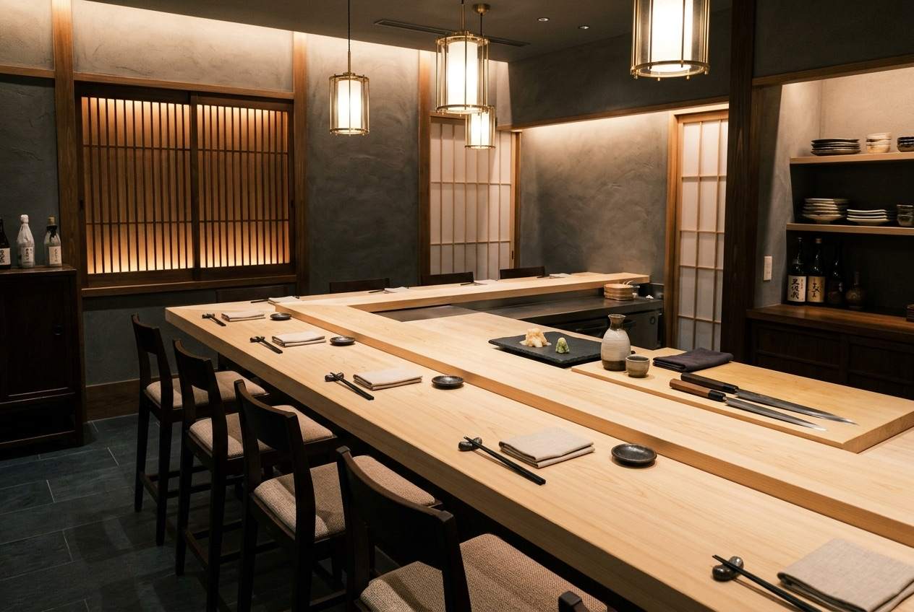

SUSHI AOKI 鮨 青木
Ginza 6-Chome · Tokyo · Eight Counter Seats東京・銀座六丁目・白木カウンター八席
The Counter白木カウンター
鮨・銀座六丁目
Edomae sushi begins hours before the first guest arrives — selecting the morning catch at Toyosu Market, curing and resting each cut, and seasoning warm shari rice with aged red vinegar. 江戸前鮨の仕事は、お客様をお迎えする何時間も前から始まります。毎朝豊洲で見極めた旬魚を締め、熟成させ、赤酢の温かいシャリと一貫ずつ結びます。
At our eight-seat solid hinoki counter in Ginza 6-Chome, Chef Kenjiro Aoki presents each piece directly to the guest, accompanied by quiet explanations of season and provenance in English or Japanese. 銀座六丁目の白木カウンター八席だけの空間で、大将・青木健次郎が一貫ずつ握り、海外からのお客様にも産地と仕事を英語でご案内いたします。
Kenjiro Aoki — Head Chef店主・青木 健次郎
Menuおまかせ献立
おまかせのみ| Lunch Omakase昼のおまかせ握り 12:00 seating (approx. 75 min) — Seasonal appetizer, 12 seasonal nigiri, hand roll, red miso clam soup, tamago.12:00一斉スタート（約75分）— 先付、旬魚握り12貫、手巻き、赤出汁、玉子焼き。 | ¥16,500 |
|---|---|
| Dinner Omakase夜のおまかせ 18:00 & 20:30 seatings (approx. 2 hrs) — 6 seasonal otsumami small plates, 13 Edomae nigiri, hand roll, soup, tamago, printed fish card.18:00・20:30の二部制（約2時間）— 季節の摘み6品、握り13貫、手巻き、椀、玉子、産地カード付。 | ¥28,000 |
| Sake & Champagne Pairing日本酒・シャンパーニュ ペアリング 6 curated pours tailored to the evening's catch.摘みと握りに合わせた厳選6杯。 | ¥9,500 |
| Japanese Tea Pairing (Non-Alcoholic)日本茶ペアリング（ノンアルコール） 5 single-origin cold-brew and roasted Japanese teas.氷出し玉露や焙じ茶など厳選5杯。 | ¥5,500 |
Reservations & Policyご予約とお願い
ご来店前にFragrance & Attire香りと服装
Please refrain from wearing perfume, cologne, or strongly scented lotions so all guests can appreciate the delicate aroma of hinoki and seasonal fish. Smart casual attire is requested (no beach sandals or sleeveless shirts).白木や旬魚の繊細な香りをお楽しみいただくため、香水や香りの強い整髪料はお控えください。服装はスマートカジュアルをお願いしております。
Dietary Restrictionsアレルギー・食事制限
Specific shellfish or individual fish allergies can be accommodated with at least 48 hours' notice. Because our preparation relies on bonito/kelp dashi and raw seafood, we are unable to accommodate vegan, vegetarian, gluten-free soy, or no-raw-fish diets.甲殻類や特定魚介のアレルギーは48時間前までにご相談ください。出汁や生魚を主体とする構成のため、ヴィーガン・生魚全般不可のご要望には対応いたしかねます。
Arrival & Photographyご来店時間・撮影
Each seating begins together at 12:00, 18:00, and 20:30 so shari temperature is served at its peak. Kindly arrive 5–10 minutes early; arrivals more than 15 minutes late may result in fewer courses or cancellation. Quiet, flash-free photos of your sushi are welcome.最適な温度のシャリをご提供するため一斉スタートとなります。5〜10分前のご来店にご協力ください。お料理の撮影はフラッシュ・シャッター音なしにて可能です。
Cancellation Policyキャンセル規定
Free modification up to 72 hours prior to seating. Cancellations within 48 hours incur 50% of the course fee; within 24 hours or no-show incur 100%. We recommend avoiding reservations on the day of an international flight arrival.72時間前まで変更無料。48時間以内は50%、24時間以内および無断キャンセルは100%を申し受けます。国際線到着当日のご予約はお控えいただくことをおすすめします。
Children & Group Sizeお子様・人数
Guests aged 12 and older enjoying the full omakase course are welcome. Maximum party size is 4 guests per reservation.おまかせコースを召し上がれる12歳以上のお客様より承ります。1組最大4名様までとなります。
Reservations open on the 1st of each month at 10:00 JST for the following month.毎月1日 10:00より翌月分のご予約を承ります。
Access道案内
銀座六丁目- Address住所
- Ginza Rokuchome Bldg. B1F, 6-9-12 Ginza, Chuo-ku, Tokyo
東京都中央区銀座6-9-12 銀座六丁目ビル B1F東京都中央区銀座6-9-12 銀座六丁目ビル B1F - Station最寄駅
- 5 min walk from Ginza Station (Exit A3)東京メトロ銀座駅 A3出口より徒歩5分
- Hours営業時間
- Lunch 12:00 / Dinner 18:00 & 20:30
Closed Mondays · Reservations only昼 12:00 ／ 夜 18:00・20:30
月曜定休・完全予約制 - Paymentお支払い
- Visa / Mastercard / Amex / JCB / Diners / Cash
銀座六丁目ビル前までお願いします。
みゆき通りと交詢社通りの間、GINZA SIX 裏手付近です（鮨 青木 B1F・白木行灯が目印）。